Every plot below is rendered live by reaborn in R from the seaborn-style code shown above it. Where it helps, a side-by-side panel shows the same plot in reaborn and in Python seaborn — they are designed to be indistinguishable.


Relational
scatterplot
scatterplot(data = penguins, x = "bill_length_mm", y = "bill_depth_mm", hue = "species")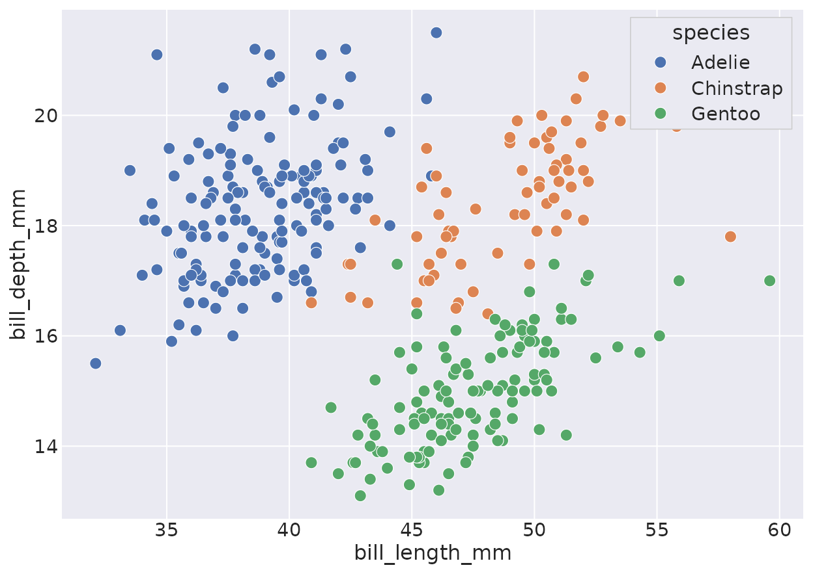
scatterplot(data = penguins, x = "bill_length_mm", y = "bill_depth_mm",
hue = "species", size = "body_mass_g", style = "species")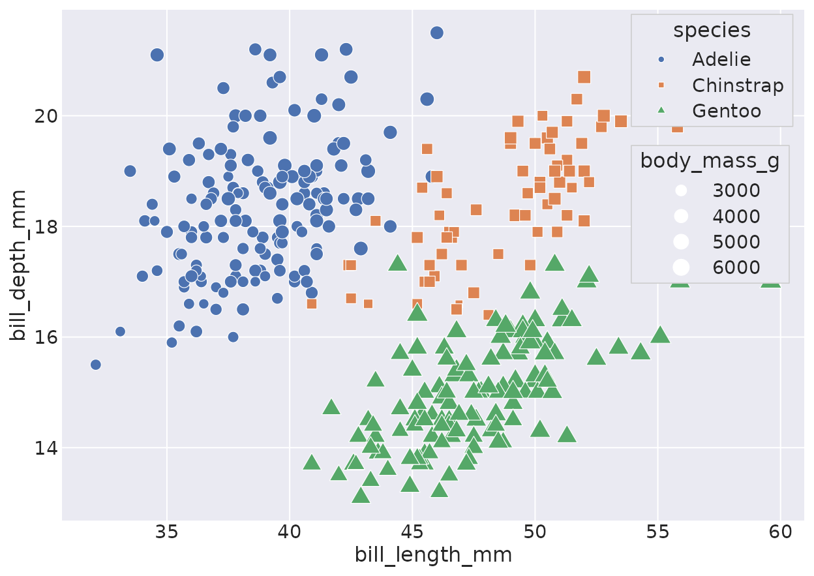
lineplot
With per-group aggregation and a bootstrap confidence band — matching seaborn.
lineplot(data = fmri, x = "timepoint", y = "signal", hue = "event")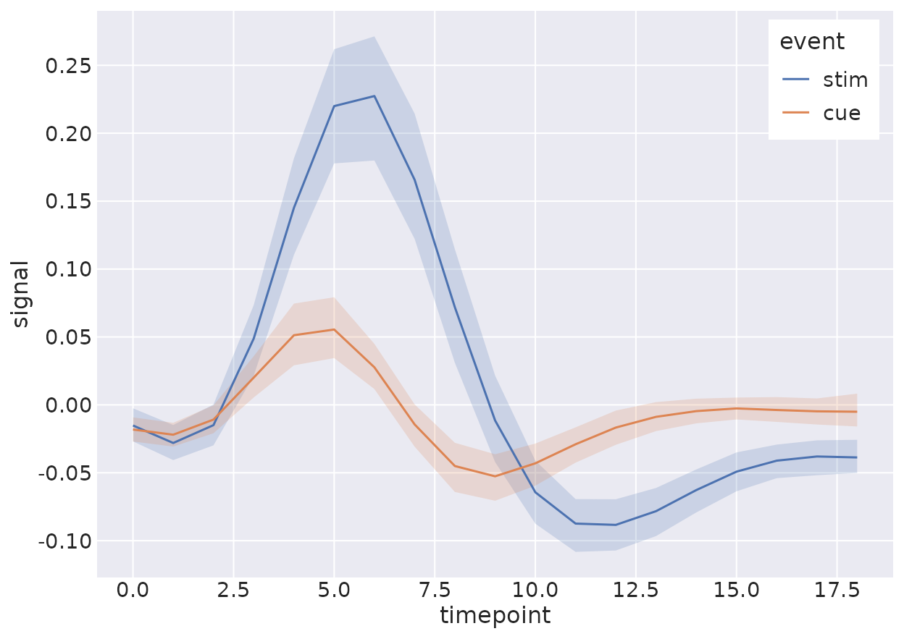
relplot
A figure-level wrapper that facets across
col/row.
relplot(data = fmri, x = "timepoint", y = "signal", hue = "event",
col = "region", kind = "line")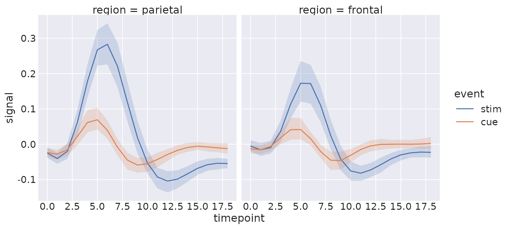
Distributions
histplot
histplot(data = penguins, x = "flipper_length_mm", hue = "species", multiple = "stack")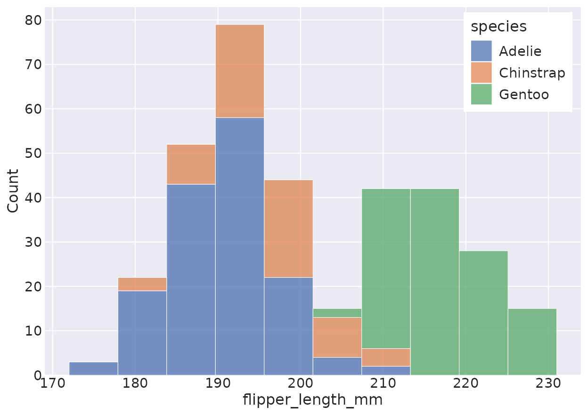
kdeplot
The KDE reproduces scipy.stats.gaussian_kde to machine
precision.
kdeplot(data = penguins, x = "flipper_length_mm", hue = "species", fill = TRUE)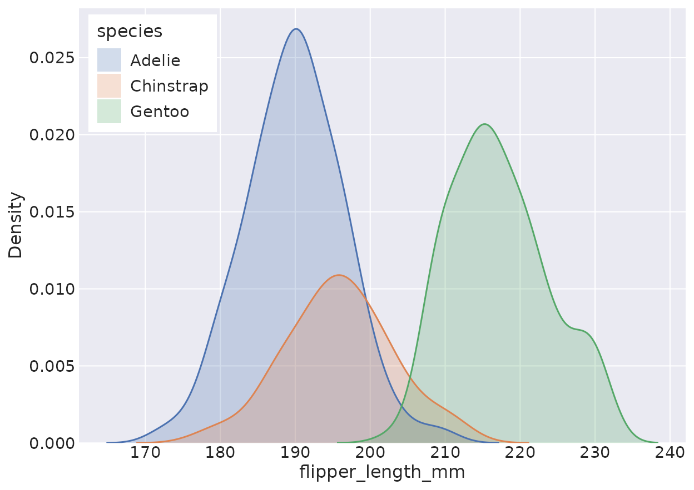
Categorical
boxplot & violinplot
boxplot(data = tips, x = "day", y = "total_bill", hue = "smoker")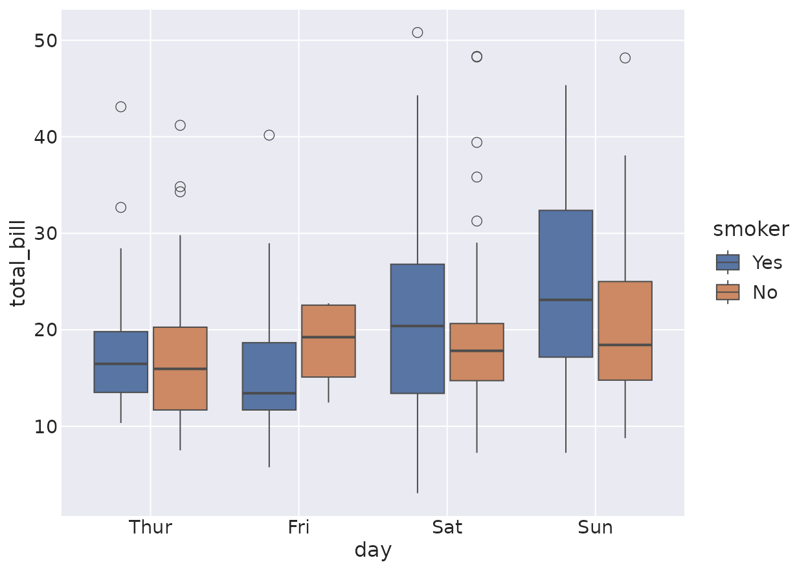
violinplot(data = tips, x = "day", y = "total_bill")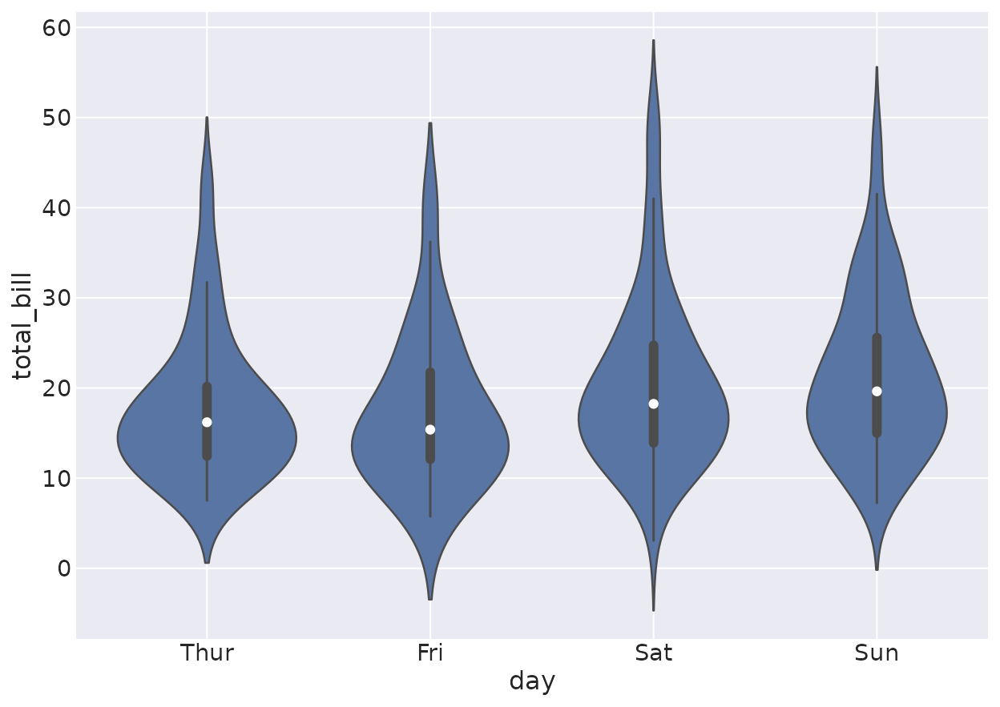
boxenplot
A faithful letter-value plot for larger samples.
boxenplot(data = penguins, x = "species", y = "body_mass_g")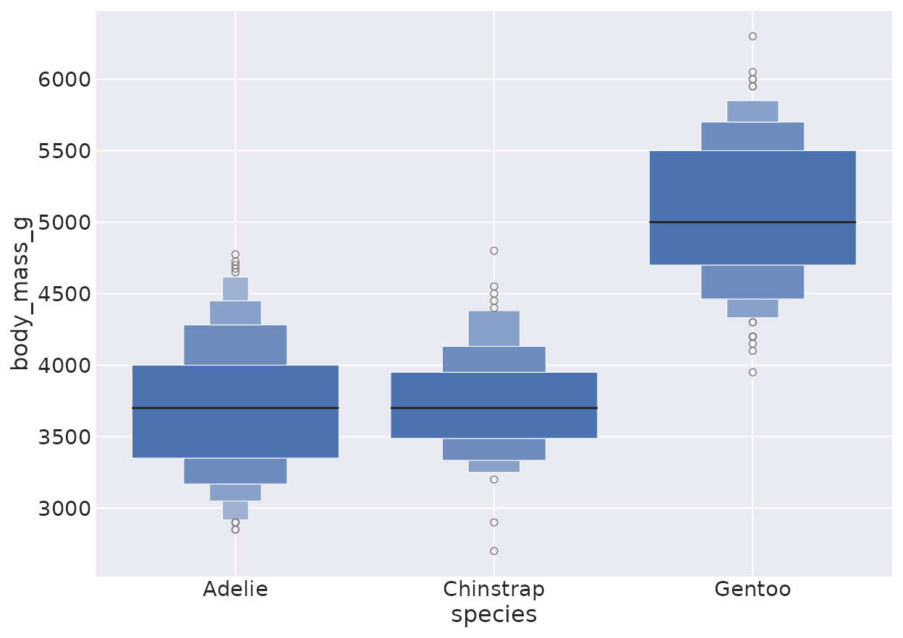
Regression
regplot
The confidence band is a bootstrap interval, like seaborn.
regplot(data = tips, x = "total_bill", y = "tip")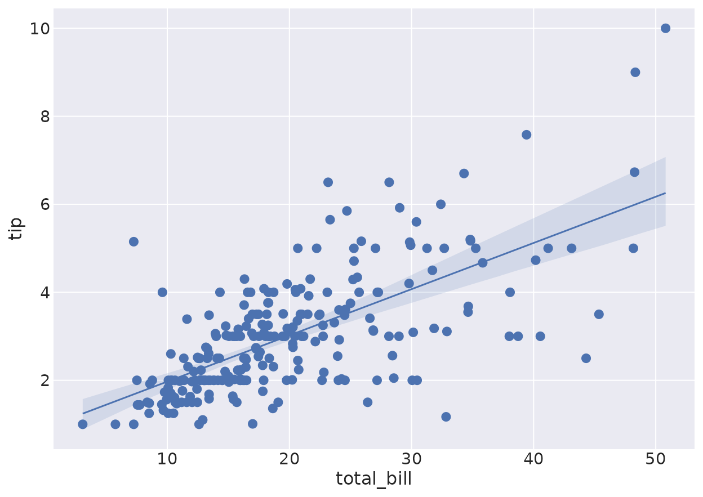
Matrix
heatmap
flights <- load_dataset("flights")
mat <- tapply(flights$passengers, list(flights$month, flights$year), function(x) x[1])
heatmap(mat, annot = TRUE, fmt = "d", linewidths = 0.5)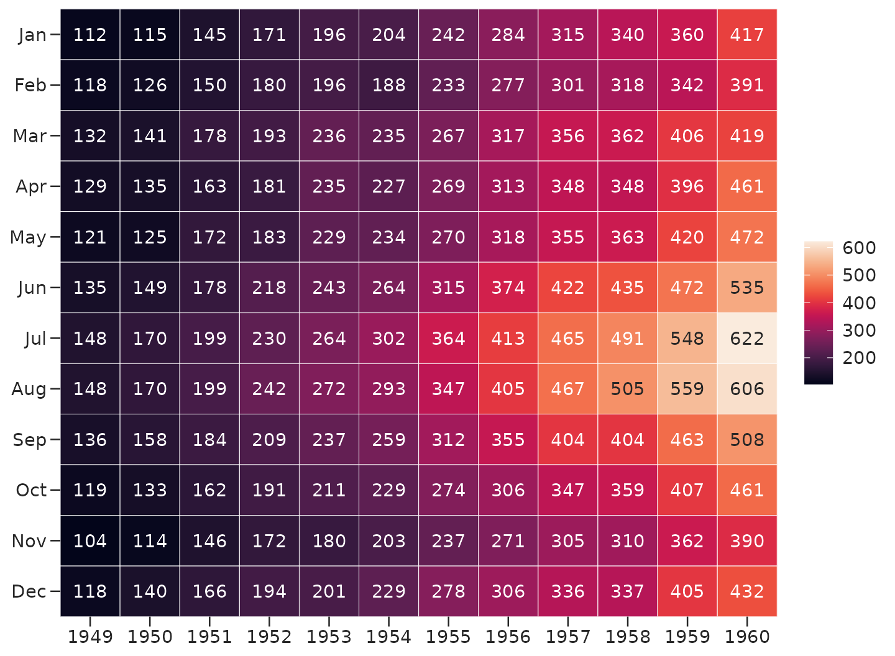
Multi-plot grids
jointplot
jointplot(data = penguins, x = "bill_length_mm", y = "bill_depth_mm", hue = "species")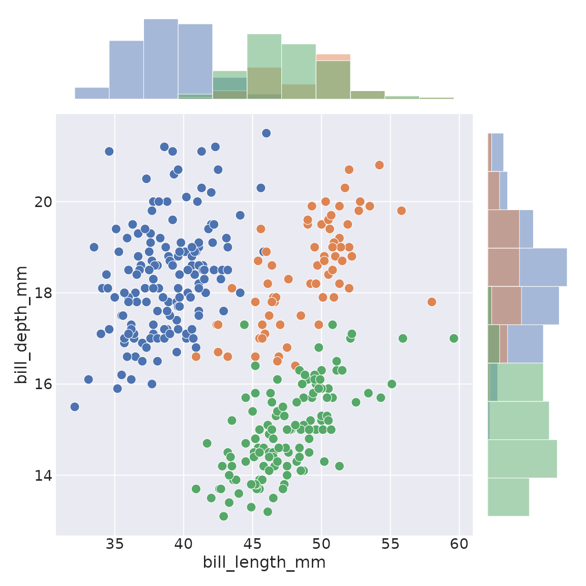
Palettes & themes
reaborn ships seaborn’s palettes, matched to the hex digit, and its five styles.
palplot(color_palette("deep"))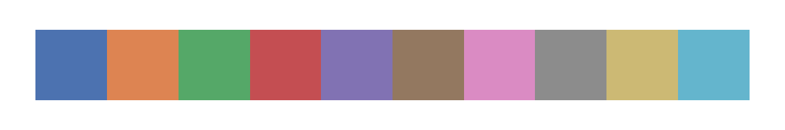
palplot(color_palette("husl", 8))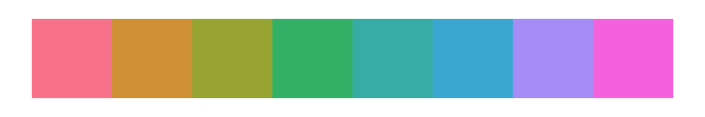
set_theme(style = "whitegrid")
scatterplot(data = penguins, x = "bill_length_mm", y = "bill_depth_mm", hue = "species")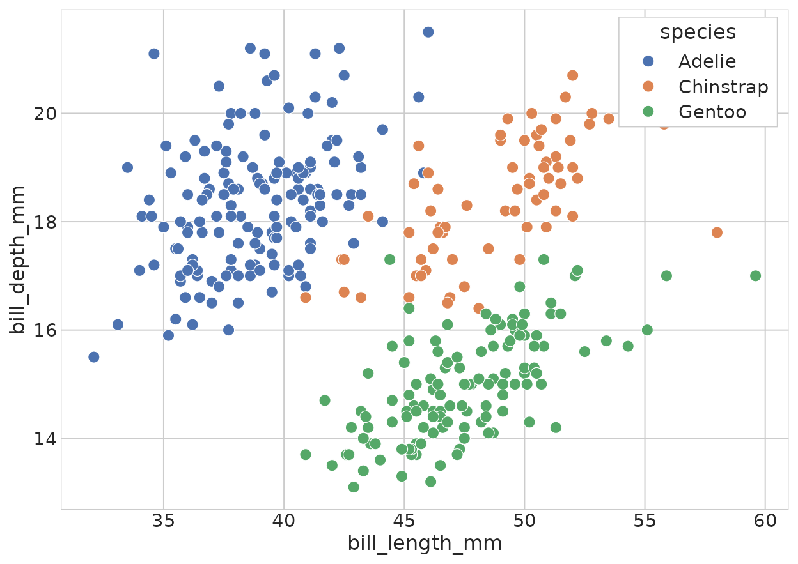
set_theme() # restore the default darkgrid